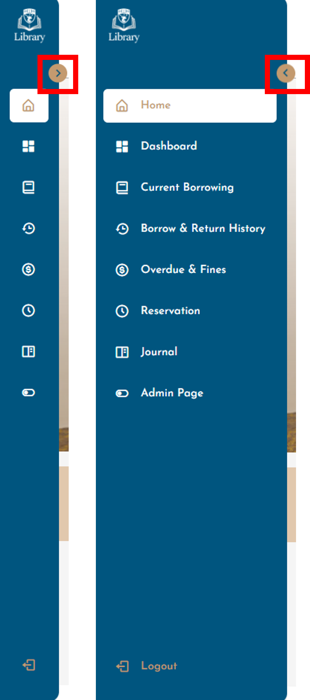
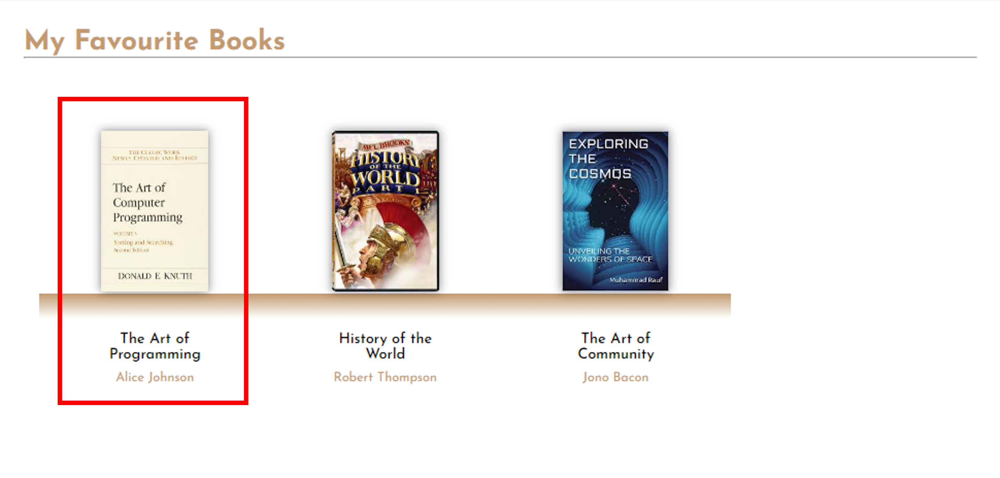
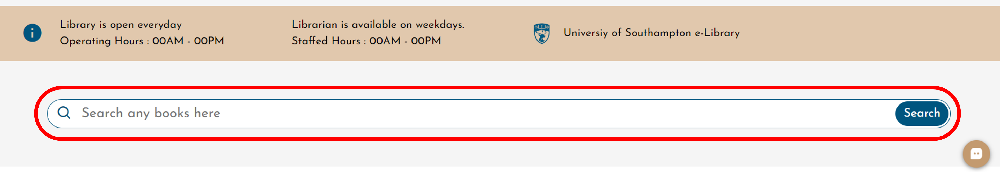

IT Department
Email : ituosm@soton.ac.uk
(1) You can expand the sidebar to view the full text on the sidebar.
(1) You can use chatbot to ask any queries.
.png)
(2) You can type your message on the textbox to get an answer.
.png)
(1) You can click on a book here to view any single books of ‘My Favourite Books’ in homepage.
(1) To search any books, you can press on the search bar, and then you will be directed to book searching.
(1) You can click on a book here to view any single books of ‘My Favourite Books’ in homepage.
.png)
(1) You can click ‘Love’ button to keep a book in your favourite list. It will be shown in the homepage.
.png)
.png)
(2) You can click ‘Reserve’ button to reserve a book. (adminBookDetailsReserve1)
There are two (2) conditions for the reservation status:
1. Your book reservation may go to ‘Confirmed’ if no one is borrowing the book;
2. Or your reservation may go to ‘Pending’ if someone is borrowing the book and once the book has been returned, then the system will follow the reserve priority.
.png)
.png)
(1) You can view the rating and comments from every users of a single book under Book Details.
.png)
(1) You can click ‘Write Review about This Book’ to write your comments and thoughts about the book.
.png)
(1) You can click ‘Cancel’ button to cancel book reservation for any pending reservation. If you click ‘Confirm’ button, then the book reservation will be cancelled.
.png)
(1) You can select either light mode or dark mode for your system appearance.
.png)
(2) You can type your thoughts about the library system for providing any feedback for system update and advancement.
.png)
(3) You can type your thoughts about the library system for providing any feedback for system update and advancement.
.png)
UoSM Library Management System is a comprehensive platform designed to streamline library operations and enhance user experience for both students and staff of the University of Southampton Malaysia. For users, it offers features such as track and manage borrowed and returned books, reservation of books, fine payment, journal writing, and more. For administrators, it offers functionalities like book registering and cataloging, borrowing and returning of books for patrons, resource, user, circulation and reservation management, acquisition tracking, report generation, and journal approval. This system serves as a centralized hub for managing library resources efficiently.
If you encounter any issues in the system, you can reach out to the university's IT
support team for assistance. Contact information can be found on the help page.
If you have any inquiries about the library, you can reach out to the librarian
for assistance. Contact information can be found on the help page.
In person: Visit the library during operating hours and speak with a librarian at the reference desk.
Email a question: Send your inquiry to the library's designated email address for reference questions.
Find Books: Utilize the library catalog to search for books by title, author, or subject.
Find Electronic Books (E-Books): Click the link in home page will link to the University of Southampton UK online library.
Find journal: Browse the journal page can find journal uploaded by users.
Find Info on the Web: Use reputable search engines and library databases to find credible information online.
Develop a topic: Consult with a librarian for assistance in refining your research topic.
Do better searches: Attend library workshops or ask a librarian for search tips and strategies.
Get help from a librarian: Reach out to a librarian for personalized research assistance.
Access library databases: Visit the library's website and navigate to the databases section, where you can search for and access various databases by subject or title.
Access library databases on my personal device: Log in to the library website using your credentials.
Database Problem? Account Locked: Contact the library's IT support or reference desk for assistance with database access issues, including locked accounts or technical problems.
Need to "authenticate": If prompted to authenticate, use your library credentials (such as username and password) to log in and access the resource.
Troubleshoot problems getting to databases: Consult with the library's IT support or reference desk for troubleshooting assistance, including issues with access or compatibility.
Use library resources from home: Utilize remote access options provided by the library, such as VPNs or proxy servers, to access library resources from home or off-campus.
Challenge materials in library collections: Review the library's procedures for challenging materials in the collection, typically involving a formal process for reconsideration.
Code of Conduct: Familiarize yourself with the library's code of conduct, which outlines expected behavior for patrons while in the library.
Donate materials to the Library: Contact the library to inquire about their donation policies and procedures, including acceptable materials and donation process.
Guidelines for Using Library Computers: Consult with library staff or check the library's website for guidelines and policies regarding computer use, including internet access and acceptable use policies.
Library checkout rules and policies: Review the library's checkout policies, including loan periods, renewal options, and overdue fines, which are typically outlined on the library's website or posted in the library.
Why is there a Security Gate: The security gate is installed to prevent theft and unauthorized removal of library materials. Patrons are expected to pass through the gate when entering and exiting the library to ensure compliance with library policies and prevent loss of library resources.
Contact the library about my record: Reach out to the library's circulation desk or access your account through the library's website using your login credentials.
Pay Library Fines: Visit the circulation desk or access your account online to view and pay fines using the designated payment methods.
Renew my material online: Log in to your library account through the library's website and follow the instructions to renew materials online, if available.
Return a book or other material: Return materials to the library's circulation desk or designated drop-off location during operating hours.
See if I have overdues, fines, or library holds on my student record: Check your library account online or contact the circulation desk for information on overdues, fines, or holds associated with your account.
See what material I have checked out: Access your library account online or inquire at the circulation desk to view a list of materials currently checked out to you.
Does the library rent textbooks: Inquire with the library staff about textbook rental programs or services, if available.
Find out about document delivery: Ask library staff about document delivery services, which may include interlibrary loan or document delivery options.
Log on to library computers: Use your library account credentials or guest login information to access library computers.
Make photocopies: Use the library's photocopy machines, following any applicable instructions or guidelines for use.
Print out a paper: Access printing services provided by the library, which may involve using designated printers or printing stations.
QR Codes in the Library: Scan QR codes located throughout the library to access additional information, resources, or services.
Suggest the library buy a book: Submit a book purchase request to the library, providing details about the requested item and reasons for acquisition.
Schedule a Group Study Room: Contact the library's circulation desk or check the library's website for information on reserving group study rooms, including availability and booking procedures.
Why is there a Security Gate: The security gate is installed to prevent theft and unauthorized removal of library materials. Patrons are expected to pass through the gate when entering and exiting the library to ensure compliance with library policies and prevent loss of library resources.
Search the library's online catalog using the title, author, or ISBN of your textbook to see if it is available in the library's collection.
Inquire at the library's circulation desk or contact library staff for assistance in locating specific textbooks or course materials.
Check the library's reserve materials section, which may include items placed on reserve by instructors for specific courses.
Search the library's online catalog for reserve materials by course name, instructor name, or course number.
Inquire at the circulation desk for assistance in locating reserve materials, including language tapes.
Check the syllabus or course materials provided by your instructor for information on accessing their webpage or online resources.
Access your courses, assignments, and other course materials through the Blackboard interface